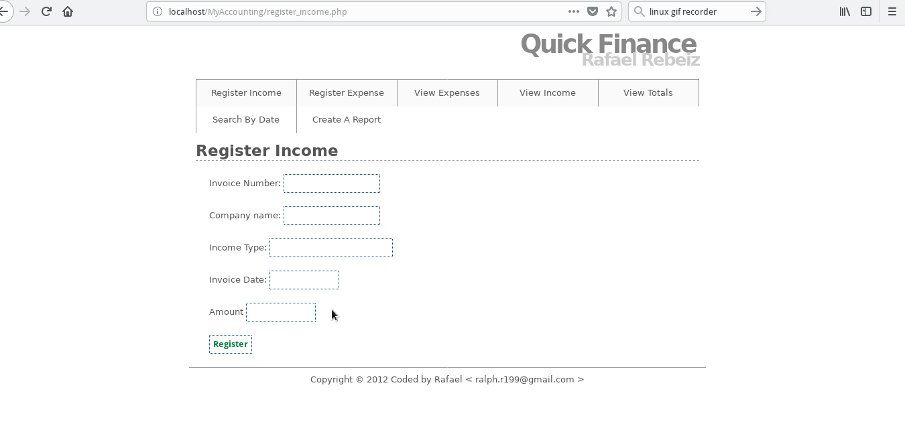

Dynamic Website

Dynamic website written in GO.
This website written entirely in GO, using postgresql as
DB.
Complete with a blogger & a password manager.
quickpass

quickpass is a simple password manager written in
python3 and tkinkter.
passwords are encrypted, so even if the sqlite db file
is viewed the passwords are encrypted / decrypted with a
key.
Fast and easy to use, doesn't require a database server
quickpass multi
quickpass is a simple password manager written in python3 and tkinkter
A multi user version of quickpass, requires a MySQL database
quickfinance
quick finance is a web application written in PHP and uses a MySQL DB You can easily add both expenses and income into the application and check the reports for how much money you are either making or losing in any interval you want weekly, monthly, yearly.
Key features Manage income and expenses Create weekly, monthly, yearly reports. Get VAT information